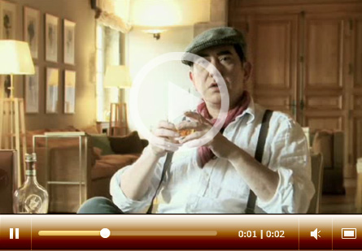
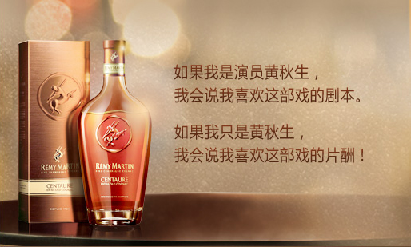
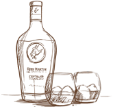

了解更多>关于诚印干邑
- 
- • 什么是人头马诚印干邑？
- 人头马诚印代表了一款全新的简单而又无装饰的奢华优质干邑。圆润，顺滑而平衡，和谐。"诚印"传达了家族的忠诚。透明酒瓶包装使得会更加注重体现其美丽色泽。这个名字体现了人头马的象征：半人马星座，人面马身，中文"人头马"。Pierrette Trichet创造的这款干邑体现了家族精神：仁慈，信心，忠诚，自然，无装饰。
-
- • 什么是特优香槟干邑？
- 特优香槟干邑-干邑中的精品，只有100%采用干邑地区最中心的大小香槟区的葡萄酿造的干邑才称为特优香槟干邑。特优香槟干邑（FINE CHAMPAGNE COGNAC）是更高的法国政府原产地命名资质，特优香槟干邑仅占干邑产量的17%。
80%的特优香槟干邑都由人头马酿造，人头马全系列产品都是特优香槟干邑。
-
- • 人头马诚印的品鉴
- 人头马诚印闻上去表现为热的苹果派的果香，入口表现出柔和的槐蜜及水果的味道，花果香味完美平衡和谐，最好的表达了来自于干邑中心的特点。
-
- • 人头马诚印是用多少种生命之水调配而成？
- 人头马诚印是用超过300多种生命之水调配而成。除了数量巨大，调配这款独特的干邑所用的每一款生命之水都是经过精心挑选的并且都是陈年的。其中最年轻的生命之水的陈化期超过6年以上，最陈年的将近30年。
-
- • 诚印标志的意义？
- Emile Rémy Martin出生在人马星座，从1870年开始用这个标志作为公司标志。人头马身，脚踏实地，头顶蓝天意味着汲取人类之智慧。
-
- • 用来调配人头马诚印的生命之水来自于哪里？
- 约75%来自大香槟区，25%来自于小香槟区。